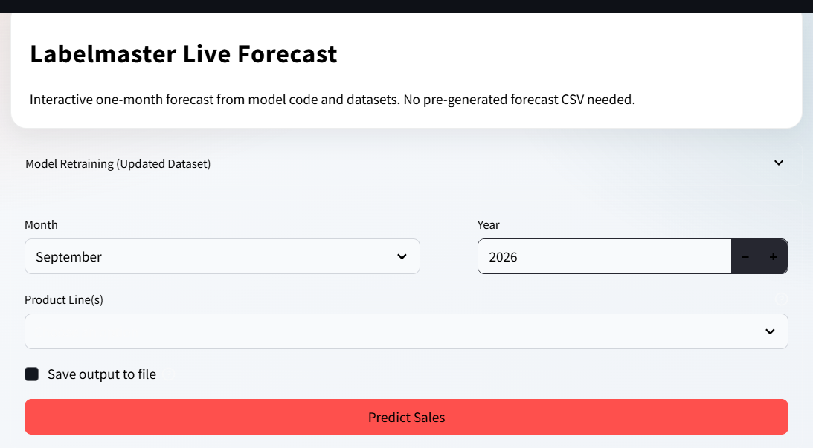
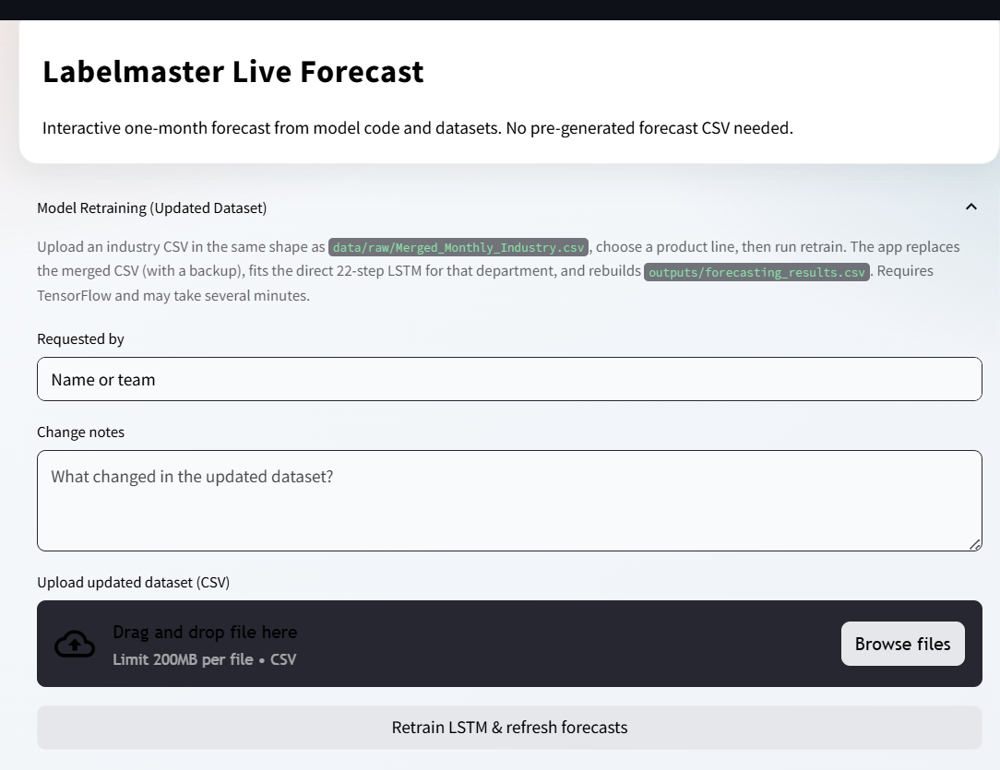

This project forecasts monthly sales for 8 Labelmaster departments using per-department LSTMs,
driven by freight/economic indicators and industry mix. Forecasts are generated live from
model code and current data — there’s no pre-generated forecast CSV sitting behind
the app.
Note: this project is covered by an NDA with the client. The screenshots and details below
show the modeling approach and the input workflow only — no forecast output or sales
figures are shown.
Live Forecast App
A Streamlit front end runs the whole pipeline on demand: pick a month, year, and product line(s), and it forecasts straight from the current model and dataset.

Live Forecast — request a one-month prediction

Model Retraining — refit on an updated dataset
End-to-End Flow
Merged_Monthly_Industry.csv
│
▼
Preprocess (dept feature list, date cut, impute)
│
▼
Feature eng (log target, seasonality, rolls, best FTR lags;
optional industry weights)
│
├──── train ──► LSTM(64→32→Dense→22) + scalers
│
└──── forecast ► last 12 months → 22-step vector
│
▼
wide CSV / Streamlit UI
Data Preparation
Source: data/raw/Merged_Monthly_Industry.csv — monthly sales by department
plus freight corridors, Cass/TCI/ICI indexes, trailer metrics, employment/income, and industry
mix columns. Two parallel preprocessing paths handle departments with and without industry
weighting:
Path
Modules
with_weights
preprocessing_with_weights.py + industry columns
without_weights
preprocessing_without_weights.py
Shared steps:
Load CSV, clean “Average of ” prefixes, parse dates
Filter to the ~2003-01 → 2025-05 window
Keep department-specific feature lists
Drop zero/NaN targets; impute (0 for some columns, forward/backward-fill for the rest)
Feature Engineering
Main entry point: prepare_lstm_ftr_features(...).
Step
What It Does
Target transform
y_model = log1p(sales)
Calendar
sin_month / cos_month
Autoregressive
lag_12, roll_3, roll_6, trend index
Freight lags (most depts)
Lags 1–3 on freight indicators; keep the best lag by correlation with the log target
Industry-growth-only depts
No freight lags — industry growth path only
Scaling
StandardScaler on features
with_weights only
Multiply industry columns by department weights
Departments route to one of the two preprocessing/feature paths above depending on whether industry weighting applies to that department.
LSTM Model Architecture
One Keras model per department (and per weighting variant):
There is no ensemble of LSTM + XGBoost + Prophet in the live path — XGBoost and Prophet
are listed as install dependencies but aren’t used in production forecasting.
Training vs. Inference
Train: routes by department, builds features, windows them into sequences,
fits the model, and saves the model plus its scalers.
Forecast: takes the last 12 feature rows, runs one LSTM pass to produce a
22-month vector per department, then joins departments into a single wide table keyed by date.
Optional 95% intervals use holdout residual variance when those files are available.
Evaluation
Area
Role
Metrics
MAE, RMSE, WAPE, bias, MAPE
Backtest
Rolling-origin cross-validation folds
Error analysis
Offline bias/error analysis against a seasonal-naïve baseline
Train scripts
Holdout cutoff around 2022-10-31 when enabled
Mental Model
The with/without-weights LSTM stack, the forecast joiner, and the Streamlit app are the
production path. An older config-driven CLI scaffold (different lag/MoM/YoY setup and LSTM
parameters) exists in parallel but isn’t fully aligned with the live engines — a
reminder that a codebase can carry more than one generation of the same idea, and knowing which
one is actually load-bearing matters as much as building it in the first place.